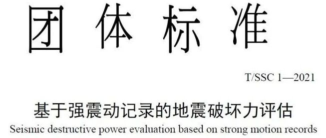

新标准发布 ：基于强震动记录的地震破坏力评估
标准链接：
http://www.ssoc.org.cn/Detail1.html?id=10&contentId=287
下载地址：http://www.ssoc.org.cn/webfile/upload/2021/08-04/09-32-590163-1417017142.pdf
00
前言

中国地震学会标准《基于强震动记录的地震破坏力评估T/SSC 1—2021》，由清华大学、中国地震局地球物理研究所、中国地震局工程力学研究所、中国地震台网中心、中国地震灾害防御中心、北京市地震局、四川省地震局、北京师范大学、深圳防灾减灾技术研究院、福建省地震局、北京科技大学、深圳大学、北京建筑大学等13家单位共同编制，经过立项与撰写、内部讨论与修改、公开征求意见与修改、专家会议评审与标准完善等阶段，于2021年7月30日正式发布。
编制目的
地震对区域建筑的破坏力是震后应急决策的重要依据，影响应急资源的调度和应急力量的部署。随着我国地震台网建设的稳步推进，当前密集的强震动台站为基于强震动记录的地震破坏力评估提供了实施基础。
目前，我国既有相关标准或是面向城市规划的地震风险评估（如《城市抗震防灾规划标准GB 50413-2007》和《城市综合防灾规划标准GB/T 51327-2018》）、或是依赖现场实地调查（如《地震灾情应急评估GB/T 30352—2013》等），尚没有一部面向震后应急决策的、基于实测地震动数据的地震破坏力评估标准。
在国际上，相关的震害评估标准也同样主要针对现场调查阶段，而相关的地震应急评估平台（如美国地质调查局USGS的ShakeMap、PAGER、日本的J-RISQ等）由于软件权限和标准不兼容等一系列问题，并不能直接在我国应用。
因此，为满足地震应急管理部门及时了解地震破坏力的迫切需求，充分利用现有强震动台网的记录数据，清华大学等13家单位共同编制了此标准。
02
标准用户
该标准主要推荐各省市地震局、应急管理局等在震后应急评估中应用。另外，住建、民政等部门可应用本标准辅助评估灾后建筑震害和损失，城市规划、保险等机构可借助历史地震动数据应用本标准评估区域建筑地震风险，也推荐科研院所采用本标准开展研究。
需要说明的是：
（1）该标准是在国内外100余次基于强震动记录的地震破坏力评估的成功经验上制定的，其中包含的理论与方法经过了实际震害的检验，特别是在我国2017年8月8日九寨沟7.0级地震、2019年6月17日长宁6.0级地震和2018年12月1日美国阿拉斯加7.2级地震中，均取得了良好的评估结果。
（2）该标准主要面向区域建筑开展地震破坏力的震后快速评估。在获得强震动台网地震动实测数据和区域建筑承灾体属性数据的条件下，可在震后2小时内给出地震对分析区域的建筑破坏力评估结果。
03
内容简介
本标准给出了基于强震动记录的地震破坏力评估的方法、程序与技术要求，规定了评估报告编写的内容。标准共分为9章（如图1所示），内容主要包括：地震破坏力的评估程序、强震动记录数据收集、区域建筑属性数据准备、区域建筑抗震弹塑性时程分析、地震破坏力和影响综合评估、地震破坏力评估报告编写及附录。

图1 标准目录
本标准适用于破坏性地震发生后基于强震动记录评估地震的破坏力，并建议了平立面布置规则的高层钢筋混凝土框架剪力墙或钢筋混凝土剪力墙结构、多层钢筋混凝土框架或钢框架结构、砌体结构与土木结构的计算模型和参数。对于其他结构类型，应进行专门研究。
读者可通过本文首尾的下载链接，下载并查看标准具体内容。
04
特色
本标准具有如下特色：
（1）结合实测地震动时程数据
当前国内外缺乏基于实测地震动时程数据的评估标准，如美国ATC-20、FEMA 306和FEMA 351等评估标准都采用现场调查方式，不涉及地震动时程数据。本标准充分考虑地震动力特性，可以考虑当地地面运动特征，结果更加真实、合理。
（2）采用依托弹塑性时程分析方法
当前国内外缺乏依托弹塑性时程分析方法的区域震害评估标准。本标准可通过弹塑性时程分析给出建筑地震反应、破坏等级、人员加速度感受等精细结果，能更好地反映不同结构动力学特性和地震动的特征。
（3）推荐了全国性的区域建筑承灾体数据库
根据人口普查等数据，该标准推荐了分级区域各结构比例数据库，涵盖全国320个城、镇、村级别区域，进而可在缺乏当地详细数据的情况下，考虑当地建筑统计特征，给出更符合实际的评估结果。
综合来看，本标准充分挖掘我国强震台网的数据价值，依托弹塑性时程分析和当地建筑统计结果，给出更及时、更精细、更合理的区域建筑地震破坏力评估结果，为震后应急评估提供了重要的方法。
05
典型案例
以2020年5月18日云南昭通市巧家县5.0级地震的破坏力评估为典型案例，对该标准的具体应用进行介绍。
1. 地震基本参数
据中国地震台网正式测定，5月18日21时47分在云南昭通市巧家县发生5.0级地震，震源深度8千米，震中位于北纬27.18度，东经103.16度。
2. 地震动记录信息
根据该标准第5章的相关规定，获取本次地震强震记录。
2020年5月18日云南昭通市巧家县5.0级地震共获得83组地震动，地震动记录信息如表1所示。典型地震记录（PGA最大）分析如下：编号为1的记录台站位置为北纬27.23度，东经103.20度，记录到水平向PGA为2.82 m/s2，竖直向PGA为3.16 m/s2 。该地震动及反应谱如图2所示。
表1 地震动记录的基本信息


(a) EW

(b) NS

(c) UD

(d) 绝对加速度反应谱及设计反应谱
图2 1号台站地面运动记录和绝对加速度反应谱及设计反应谱
3. 匹配建筑承灾体属性数据集
根据该标准第6章，进行区域建筑属性数据准备。
根据人口普查数据，云南昭通市巧家县抗震性能好的建筑比例为10.8%，抗震性能较差的建筑比例为36.1%，由本标准6.2.1条，该区域分级编码为T-Ⅳ-2，按照附录A中的表A.2.23构造区域建筑数据集。对各类型的结构，根据 第7.2节的内容进行力学模型的建立与分析。
4. 第一批次报告（一报）
由于应急评估的时限要求，应首先给出部分重点区域的地震破坏力（参见标准4.2条），尽快进行第一批次报告。然后，再评估所收集到的全部地震动记录，进行更加全面的第二批次报告。
由本标准4.2条，一报共包括7组地震动记录PGA大于1 m/s²的强震动台站。根据该标准第7.3节，开展弹塑性时程分析计算得到每栋建筑响应，并利用第8章开展地震破坏力和影响综合评估。图3和图4分别为根据2020年5月18日云南昭通市巧家县5.0级地震震中附近范围内台站记录评估得到的建筑震害分布示意图和人员加速度感受分布示意图（一报）。

图3 不同台站地震记录破坏力分布图

图4 不同台站地震记录人员加速度感受分布示意图
5. 第二批次报告（二报）
第二批次报告选取全部83组台站记录。图5和图6分别为根据2020年5月18日云南昭通市巧家县5.0级地震震中附近范围内台站记录评估得到的建筑震害分布示意图和人员加速度感受分布示意图（二报）。

图5 不同台站地震记录破坏力分布图

图6 不同台站地震记录人员加速度感受分布示意图
最后 ，将上述具体结果汇总于表2。
表2地震破坏力评估结果统计表

6. 评估报告结论
本次评估结果表明大部分分析区域主要处于轻微破坏，震中附近以中度破坏和严重破坏为主。人员加速度感受主要以非常不适为主，因此，地震破坏力整体较大。在地震应急避险与抗震救灾方面，可注意震中附近抗震能力较差建筑的排查与救援。
06
结语
根据本标准的程序和提供的附录参数，以上评估可在获取地震动数据后1小时内完成。该评估给出了详细的建筑破坏状态比例和加速度感受状态，可以满足震后应急评估的迫切需求。
该标准将于2021年12月1日正式实施，欢迎各位同仁下载阅读。
如有相关疑问可联系：清华大学陆新征教授，[email protected]。
标准下载地址：
http://www.ssoc.org.cn/webfile/upload/2021/08-04/09-32-590163-1417017142.pdf
---End---
相关研究
专著
人工智能与机器学习
城市灾害模拟与韧性城市
高性能结构与防倒塌
新论文：抗震&防连续倒塌：一种新型构造措施
长按识别二维码，关注我们的科研动态